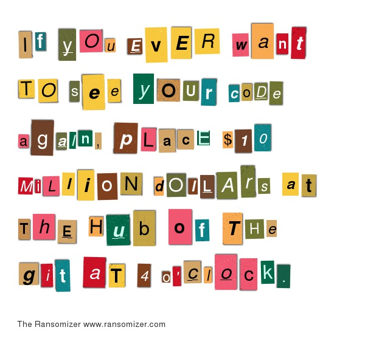

Letter writing, simply put, is the exchange messages. They may be personal or professional; heartfelt or distant; handwritten, typed, or printed. Printed letters are distinguished computer-mediated communication (CMC), commonly referred to as email, e-mail, electronic mail, and texting. Culture, and language affects letter writing, and different countries have their own postal service and postage. This document addresses letter writing in the United States of America (USA).
Letter writing involves using words to communicate and it is assumed that know the following:
-
Spelling: conventional, regional, phonetic
It is not necessary to use UK English spelling if you are American or Hochdeutsch if you are Austrian. Also, phonetic spelling suffices, as letter writing does not exclude those with varying degrees of background and education.
-
Basic Grammar
It is not necessary that you know all the rules of your language's grammar; however, you must be comfortable in basic grammar if you wish to communicate.
-
Other people
Letter writing is the exchange of messages between you and at least one other person. If you find that you do not know other people, please consider journalling or diaries, or you may wish to get out more. There is no need to know many people or to be an extrovert. Go on.
There are a variety of materials required for letter writing. You do not need all, but some materials work better with others and many require specific pairings. It is best to focus on your preferred method for applying words to paper.
If you prefer a writing utensil:
-
Pen
A basic pen (or even a pencil) is enough for a letter. Some pens have inks that smear, and some pencil leads are soft. If you are concerned about making mistakes, a pencil is a good choice, or have ready a correcting fluid or ribbon.
-
Paper
Paper ranges from lined with holes punched for storage in binders to bond typing paper to professional calligraphy papers. The choice is up to you; however, the purpose of the paper is to allow the words to be seen. Paper should be a color that constrasts with the color of the ink and should be porous enough to hold the ink.
-
Special instruments: nibs & inks
Fountain and dip pens, quills, and inks are mostly used for occasions when calligraphy is required: formal announcements, invitations to special events, diplomas and certificates. Nibs are the part of the pen where the ends can split depending on the pressure. This splitting allows for the writer to vary the thickness. Thicker strokes have more ink, and depending on the type of paper, may require blotting papers so the ink does not bleed.
If you prefer machine:
-
Word processor
Word processors are the contemporary version of a typewriter. It consists of an attached keyboard, small screen to view your text at your current location, and built-in word-processing software that allows you to save, edit, and print what you have written.
-
Computer
For our use, the term "computer" refers to a desktop, laptop, tablet, or smart phone. Like the word processor, most computers will come with some form of word-processing software already installed. You may prefer to stick with Microsoft's Office software or Apple's Pages; however, there are other software packages available for you to install on your own. All word-processing software will be able to write, delete (similar to erase, but without leaving a trace of the error), and save what you have written.
-
Printer & paper
Printers allow you to tranfer what you have written on your machines to paper. Most printers have trays that hold paper of certain dimensions. They also have moving parts that were built with certain materials in mind and jam easily. Because of this, printers work best with standard printing paper. You should consult the manual for your printer.
Word processors sometimes can be hand fed and may take a wider variety of paper types and weights. Some have feeders. As with a printer, consult the manual.
The shortest form of a letter is the note. It is customary to include a greeting or salutation, body, an optional closing line, and a signature. The most common greeting is “Dear”, followed by “Hello”. Common closing lines are “Sincerely”
White space in letter writing does not affect meaning; however, it is used to assist in readability. It is customary to start the salutation or greeing and closing line at the same margin, and the body and signature indented 2-5 spaces. Word processors often have a built-in index function, so notes have uniform margins and indentation. With handwritten notes, there can be slight variations.
Examples of notes using pen and paper or a word processor and printer:
Dear Dolly,
Hello!
Love,
Horace
Hello, world,
How's Dennis?
Brian
Note that when using “Hello” followed by a name, one uses a comma between “Hello” and the name because the name is the vocative case. The letter writer is saying hello to the addressee. “Dear”, on the other hand, is an adjective that describes the addressee.
Notes are often written on smaller pieces of paper or pages torn from a notebook. Some write notes to oneself on the backs of their hands; however, this form of note writing is not advised for notes that contain private messages, passwords, or other sensitive information.
Letters are similar to notes. The main differences are the size of the body and the method of delivery: the bodyusually has a full paragraph, often several, and the letter is enclosed in an envelope and delivered by the postal service.
-
The informal (personal) letter
Informal or personal letters are written to family members and friends. The main purpose of a personal letter is strengthening the connection between the sender and addressee.
-
Sender’s address
This is usually the sender's home: street address; city; state, province, or territory; and zip or postcode. If the sender is not sending the letter from home, the address should be where the sender currently is writing from. In this case, general location (city, state, province, or territory) will suffice. The location of the address is at the top right of the letter. The address should be left justified but as far to the right as possible without lines being cut off or moved to the next line.
-
Date
The date the letter is written may be in any format; however, be mindful that different countries have different date formats. To avoid confusion, writing the month out in full or its standard abbreviation. The date may fall a few lines under the sender's address or a few lines below but flush to the left margin.
Is this June 7th or July 6th? Note how using the word for the month helps.
6/7/2018 6 July 2018 Jun. 7, 2018You may include the day of the week. This is optional for date format, but it helps the receiver to get a feel for the day.
Thursday June 7, 2018 Friday 6 July 2018 -
Salutation and name
Depending on the sender's relationship to the recipient, salutations and greetings may range from “Dear < name >” to a term of endearment such as “Darling” or “My dear”. The salutation is flush against the left margin.
-
Introductory paragraph
The introductory paragraph sets the mood or establishes the reason behind the letter. It may refer to a previous letter or ask how the recipient is doing. It has been traditional to indent the first line of a paragraph 5 spaces; however, it is acceptable to not indent. If the writer chooses to skip indenting, then there should be extra spaces between paragraphs for legibility.
How are you? Welcome back from your travels. How were they? Sorry for taking so long to get back ... -
Main content paragraphs
The largest part of the letter is the main content. It contains what the writer wants to communicate. It can contain day-to-day activities, gossip, and news, or it could, like a jounral, convey the sender's concerns, feelings, or emotions. The reason the person is writing should be in the main content.
-
Closing paragraph
The closing paragraph is short; its purpose is to end the letter so that there is not an abrupt end after the main content.
-
Complementary closing and signature
Closings should have the same sense as the salutation, i.e. affectionate closings go with affectionate salutations. Closings are followed by a comma, and the signature is on the line or below. In typed correspondences, the name of the sender maybe typed several lines below, leaving space for the signature or initials of the sender. Closings for hand-written notes start in the middle of the page, but typed letters have the closing and signature on against the left margin.
Love, Claudius Yours truly, Lyvia Kind regards, Auntie Brooke Ciao! I H TGood-bye, Georgia Hardstark Georgia Hardstark -
Postscript or p.s. (optional)
Postscripts are short additions to the letter. They can be assides or something left out. If there are more than one postscripts, this is indicated by an additional p. Postscripts are a few spaces below the signature.
... Love, Raymond p.s. Did you hear? Everyone loves me. ... Yours, Karen p.s. You're in a cult; call your dad! p.p.s. Stay sexy and don't get murdered
-
Not all letters are the same. Although many are sent to convey news and to maintain relationships, others have a specific purpose. Common frameworks have been divided between casual and formal below.
-
Casual frameworks
A variety of frameworks are classified as casual. What they all have in common is the absence of a formal structure. They differ in their purpose and general message.
-
Chain Letter
Chain letters are second only to the ransom note for the negative feelings people have towards them. A chain letter is one of a sequence of letters, each recipient in the sequence being requested to send copies to a specific number of other people. The requests could be for a recipe, poem, or for money. Feeling obligated to fulfilling an unsolicited task could make the recipients feel uncomfortable, so initiating or continuing a chain letter should be done only after careful consideration.
-
Thank-you letter
The thank-you letter or note expresses thanks for a gift recieved directly or in the person's honor. The sender may be writing anywhere from 1 to over 100, so there is no need to include an introductory paragraph. The main content starts by thanking the recipient for the gift or action received. Followed are several sentences about how the gift or action is meaningful to the sender. Being specific here shows that the sender is genuinely grateful. Close the main content by mentioning the generosity of the gift giver.
-
Bread-and-butter letter
The bread-and-butter letter is a type of thank-you letter, but for hospitality such as a dinner or overnight stay.
-
Ransom note
A ransom is something that is paid or demanded (usually money) for the release of someone or something from captivity. The note that conveys the demand is a ransom note. Ransom notes are either typed on a generic and untraceable printer or typewriter or composed of torn pieces of a magazine and newspaper in order to hide the sender's identity. If the kidnapper or blackmailer (often senders of ransom notes) uses a computer but wants the look of old-fashioned ransom notes, there are online generators such as The Ransomizer. The ransom note below was written by such a generator:
 -
Begging letter
A begging letter is sent to a wealthy entity by an alleged poor person, and asks for assistance, usually financial assistance. The Nigerian-Prince scam is an example of a begging letter.
-
Unsent letter
Although the Unsent Letter is a journal writing technique and is not meant to be sent, it counts as a letter because it still is written to someone and to convey a message. It is not meant to be sent. The content of the unsent letter is usually therapeutic and while it makes the writer feel better to unload a range of emotions, it can do harm to or cause uncomfortable feelings in the person addressed in the letter. Emotions in the letter can be borne of anger, admiration, gratitude, sadness, and resentment.
-
Love letter
A love letter expresses feelings of love in written form. The writer may include pressed flowers, a spritz of perfume or cologne, or some other memento.
-
Dear John letter
Dear John letters originally were the letters ending a relationship written by women and addressed to service men, and have since become synonymous for a break-up letter. It is considered polite to end a relationship in person; however, there are times when a letter is necessary, i.e. long-distance relationships. Even though the goal of the letter is to end a relationship, the letter should start with a kind salutation. The main content should get to the point directly, followed by the reason behind ending the relationship. The sender should consider whether including reasons that might add more pain to the dissolution of the relationship. The point of the Dear John letter is to end the relationship, not hurt the other person. Without giving false hope, the sender should include a sentence or two to mention a fond memory or how the relationship helped the sender. Keep the letter short and close by wishing the other person well. Do not ask to be friends or for forgiveness unless the writer feels it is necessary.
-
-
Formal
beep bop boop letter recommendation, resignation, intent
-
Dunning letter
A dunning letter is a notification sent to a customer, stating that the customer is overdue in paying an account receivable to the sender.
-
Cover letter
High Life viral readymade Portland beard gastropub bespoke cornhole pop-up Pitchfork Pinterest letterpress hashtag flannel sriracha slow-carb cliche lo-fi stumptown mumblecore drinking vinegar Neutra street art artisan literally gentrify yr bitters post-ironic McSweeney's Bushwick iPhone art party American Apparel scenester PBR&B meggings polaroid Helvetica biodiesel Williamsburg typewriter trust fund YOLO you probably haven't heard of them sustainable disrupt Godard fap tote bag direct trade tousled Blue Bottle actually 90's kogi lomo vegan Thundercats ugh Odd Future brunch messenger bag cred fixie blog ennui master cleanse butcher deep v raw denim small batch Austin selfies mixtape Schlitz dreamcatcher pug chillwave aesthetic.
-
Letter of recommendation
plaid typewriter YOLO you probably haven't heard of them seitan PBR&B pug occupy banh mi drinking vinegar four loko trust fund disrupt hashtag before they sold out selfies ugh mlkshk artisan crucifix Portland cornhole butcher Echo Park Banksy keytar sartorial post-ironic Schlitz pork belly actually vinyl Pinterest Tumblr literally street art slow-carb Shoreditch wayfarers DIY Thundercats mumblecore Neutra bitters ethical McSweeney's sriracha chia vegan banjo jean shorts viral kitsch Wes Anderson tattooed VHS Kickstarter Bushwick
-
Post-interview thank you letter
mlkshk artisan crucifix Portland cornhole butcher Echo Park Banksy keytar sartorial post-ironic Schlitz pork belly actually vinyl Pinterest Tumblr literally street art slow-carb Shoreditch wayfarers DIY Thundercats mumblecore
-
asdfasdf
-
Cards
Cards or "greeting cards" are an illustrated piece of card stock, which is where the name card comes from. They often have a pre-printed message and are sent to convey good wishes on some occasion; however, there are blank cards, or "all occasion cards" for those who want to write their own message for any or no occasion.
-
Postcards
A postcard is a card sent without an envelope. On the front, there are two halves. The left half is for a brief message. On the right, there is the address block and a place for postage stamps. Because a postcard is not placed in an envelope, the message may be read by others.
- Fabian Bluebum
- 398 Sprinters Lane
- Ding Dong, TX 76543
The back is usually decorative, and the subject can be anything: a picturesque landscape, the city or town where purchased, a piece of art on exhibit, local flora or fauna, a text (eg. joke or recipe).
LIBRARIES aesthetic fap pour-over Kickstarter ugh mustache VHS leggings flexitarian cardigan XOXO blog typewriter keffiyeh Banksy artisan chia Austin Schlitz irony keytar
- Dictionary
- Thesarus
- Books of quotations
- Internet
how to address an envelope. to. from. where stamps go
Postage is the amount required to send a letter by post.
-
Metered mail
If the sender brings a letter in an envelope to the post office, the type of postage will be metered and printed on an adhesive tape, which is affixed directly to the envelope by the postal employee.
-
Postage stamps
Postage stamps are pieces of paper backed with adhesive. Stamps are placed at the upper right-hand corner of the envelope. Standard first-class stamps may have a specific denomination printed on them or the word "FOREVER". Forever stamps were introduced in 2007 and are non-denominational first-class postage; they can be used to mail first-class letters no matter what the postal rate.
Most letters are delivered via the United States Postal Service (USPS), but some people choose to deliver letters by hand. Leave a hand-delievered letter in a safe place where the intended recipient will see it. Keep in mind privacy and exposure to weather. Hand-delivered letters cannot be left in a mailbox because that is the property of the USPS.
– USPS From the USPS website:Only authorized US Postal Service delivery personnel are allowed to place items in a mailbox. By law, a mailbox is intended only for receipt of postage-paid U.S. Mail.
The sender may drop off a letter intended for delivery at the post office, in a blue postal drop box, or inside one's own residential mailbox. To help the postal carrier know that there is mail to be picked up, raise the metal flag on the side of the mailbox. If using a cluster mailbox unit, look for the unit designated for pick up.